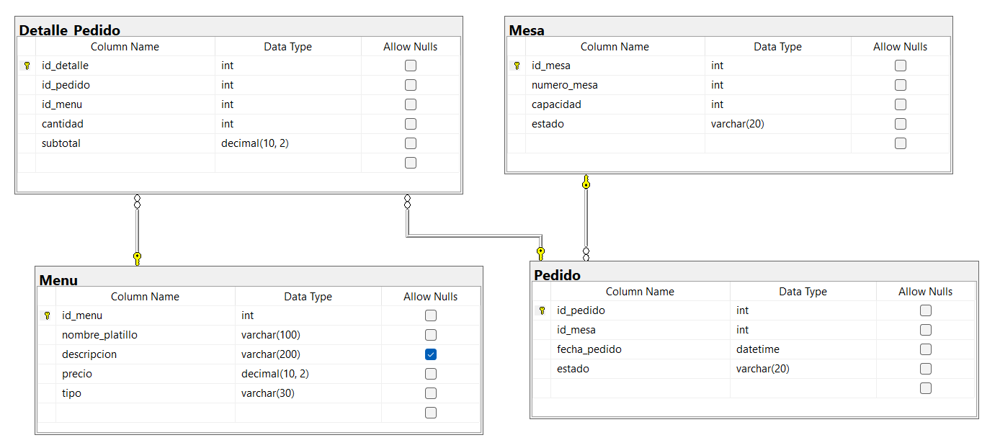

Diagrama de la Base de Datos

Diseño y creación de la base de datos del sistema de restaurante
-- Tabla de mesas
CREATE TABLE Mesa (
id_mesa INT PRIMARY KEY IDENTITY(1,1),
numero_mesa INT UNIQUE NOT NULL,
capacidad INT NOT NULL,
estado VARCHAR(20) NOT NULL CHECK (estado IN ('Disponible','Ocupada','Reservada'))
);
-- Tabla de menú
CREATE TABLE Menu (
id_menu INT PRIMARY KEY IDENTITY(1,1),
nombre_platillo VARCHAR(100) NOT NULL,
descripcion VARCHAR(200),
precio DECIMAL(10,2) NOT NULL,
tipo VARCHAR(30) NOT NULL CHECK (tipo IN ('Entrada','Plato Fuerte','Bebida','Postre'))
);
-- Tabla de pedidos
CREATE TABLE Pedido (
id_pedido INT PRIMARY KEY IDENTITY(1,1),
id_mesa INT NOT NULL,
fecha_pedido DATETIME NOT NULL DEFAULT GETDATE(),
estado VARCHAR(20) NOT NULL CHECK (estado IN ('Pendiente','En Preparación','Servido','Pagado')),
FOREIGN KEY (id_mesa) REFERENCES Mesa(id_mesa)
);
-- Tabla detalle de pedido (relación muchos a muchos entre Pedido y Menu)
CREATE TABLE Detalle_Pedido (
id_detalle INT PRIMARY KEY IDENTITY(1,1),
id_pedido INT NOT NULL,
id_menu INT NOT NULL,
cantidad INT NOT NULL CHECK (cantidad > 0),
subtotal DECIMAL(10,2) NOT NULL,
FOREIGN KEY (id_pedido) REFERENCES Pedido(id_pedido),
FOREIGN KEY (id_menu) REFERENCES Menu(id_menu)
);
Insertando registros de ejemplo:
-- Mesas
INSERT INTO Mesa (numero_mesa, capacidad, estado) VALUES
(1, 4, 'Disponible'),
(2, 2, 'Disponible'),
(3, 6, 'Ocupada'),
(4, 4, 'Reservada');
-- Menú
INSERT INTO Menu (nombre_platillo, descripcion, precio, tipo) VALUES
('Ensalada César', 'Ensalada fresca con pollo y aderezo césar', 120.00, 'Entrada'),
('Filete de Res', 'Filete de res a la parrilla con guarnición', 250.00, 'Plato Fuerte'),
('Sopa Azteca', 'Sopa tradicional mexicana con tortilla y aguacate', 90.00, 'Entrada'),
('Agua de Horchata', 'Bebida fresca de arroz y canela', 45.00, 'Bebida'),
('Pastel de Chocolate', 'Pastel casero con cobertura de chocolate', 80.00, 'Postre');
-- Pedido (Mesa 3 pidió alimentos)
INSERT INTO Pedido (id_mesa, estado) VALUES
(3, 'Pendiente');
-- Detalle del Pedido
INSERT INTO Detalle_Pedido (id_pedido, id_menu, cantidad, subtotal) VALUES
(1, 2, 2, 500.00), -- 2 Filetes de res
(1, 4, 2, 90.00), -- 2 Aguas de horchata
(1, 5, 1, 80.00); -- 1 Pastel de chocolate